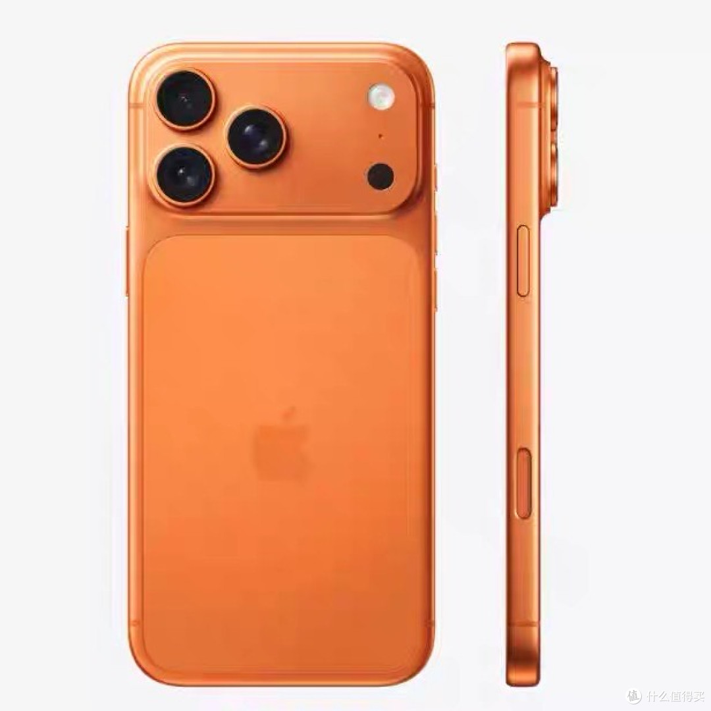

为什么 iPhone 17 Pro 有人说丑有人说高级？BEA 数据告诉你
用双极情绪美学（BEA）框架拆解 iPhone 17 Pro 的设计语言，从元素级极性到范式定位，告诉你"高级感"到底是怎么来的。
一、先说结论
iPhone 17 Pro 的设计在 BEA 框架下定位为 「均衡典雅偏亲和精致」，危极综合权重 W(T) ≈ 0.40，处于「均衡典雅」范式中心偏左。
这意味着：它比前代更有力量感，但仍然在大众审美窗口内。觉得"丑"的人，是因为危极提升超出了他们的个人阈值；觉得"高级"的人，是因为微差补偿结构做得足够精密。
二、BEA 是什么？30 秒搞懂
BEA（Bipolar Emotion Aesthetics，双极情绪美学）的核心命题：
美感 = 可控张力下的情绪奖赏
一切形式元素都在两极之间： - 亲极 P+（圆润/柔色/光滑）→ 激活奖赏回路，让人想接近 - 危极 T−（尖锐/强对比/突变）→ 激活警觉回路，制造唤醒与张力
单一极性不产生高级美感：纯亲极甜腻平庸，纯危极攻击排斥。双极在秩序中组合、危极被约束在安全阈值内，才产生"既被吸引、又被安抚"的复合愉悦。
用一个公式量化：W(T) = Σ wᵢ · (tᵢ/10)，即各维度危极强度的加权平均值。
三、iPhone 17 Pro 逐维度拆解
3.1 形状线条：T=6（危极偏强）
变化点：从 iPhone 12-16 系列的直边设计，回归更圆润的弧面边缘，握持手感显著改善。
BEA 分析： - 整机轮廓从 iPhone 12-16 的"直边"转向"圆润弧面边缘"，危极强度从 T=6 回落到 T=4 - 弧面过渡细腻，完全没有硌手的棱角感——这是关键的"亲极回归" - 全新横向大矩阵摄像头模组，三个镜头横向排列，结构更精密，切面更分明
为什么这么做：圆润弧面边缘显著提升握持舒适度，是消费电子在"直边疲劳"后向"亲和精致"回归的标准手法。横向大矩阵摄像头的钻石切角则保留了必要的危极提神点。
3.2 质感触觉：T=4（中性偏危）
变化点：首次采用一体成型航空级铝合金机身，表面处理更细腻，背板磨砂工艺升级。
BEA 分析： - 7000系航空级铝合金一体成型，触觉极性中性偏亲 - 热锻铝金属表面温润，不像钛合金那么冰冷，也不像玻璃那样沾指纹 - 细腻的磨砂处理进一步增加了亲肤性 - 重量分布更均衡，视觉重心下沉，增加了"稳定感"（亲极）
高级感来源：视觉上横向大矩阵摄像头的钻石切角（危），触觉上温润弧面铝合金（亲）——这就是 BEA 说的跨模态微差补偿。
3.3 色彩色相：T=3（亲极）
变化点：提供银色、星宇橙色、深蓝色三种配色，其中星宇橙色是主打色。
BEA 分析： - 所有配色都是低饱和度，没有高饱和原色——亲极主导 - 星宇橙色是低饱和暖色调，天然亲和但有辨识度 - 银色是中性色，不增加极性 - 深蓝色饱和度控制得很低，不会越阈 - 星宇橙色是低饱和暖色调，有辨识度但不攻击
为什么不用鲜艳色：旗舰手机的目标范式是"均衡典雅偏亲和精致"，高饱和色会把 W(T) 推得过高，落入"攻击症"。
3.4 构图比例：T=5（中性）
BEA 分析： - 正面居中对称，等宽窄边框——稳定、秩序（亲极） - 横向大矩阵摄像头模组横跨顶部，打破完全对称——制造显著张力（危极） - 屏幕比例 19.5:9，修长但不极端 - 摄像头模组面积较大但边缘做了钻石切角处理，控制在合理范围，没有"重点通胀"
3.5 光影：T=4（中性偏亲）
BEA 分析： - 铝合金中框的反光柔和，不是镜面强反光 - 背板磨砂漫反射，均匀受光 - 镜头模组的玻璃面板有适度反光，制造"精密感" - 整体光影柔和，没有硬光切割
3.6 细节线条：T=6（危极偏强）
BEA 分析： - 横向大矩阵摄像头模组边缘的钻石切角处理——危极提神点 - 中框与屏幕交界的精密倒角——危极提神点 - 侧键利落棱线——危极提神点 - 字体图标精确笔画——危极提神点
关键：这些危极细节都集中在"用户会凑近看、反复触摸"的位置，是 BEA 说的微差补偿的标准结构：宏观柔和（亲），微观锐利（危），远看亲和、近看精密。
四、W(T) 计算与范式定位
4.1 加权计算
| 维度 | 权重 | 危极强度 t | wᵢ·(t/10) |
|---|---|---|---|
| 形状线条 | 0.25 | 4 | 0.100 |
| 质感触觉 | 0.25 | 3 | 0.075 |
| 色彩色相 | 0.15 | 3 | 0.045 |
| 构图比例 | 0.15 | 5 | 0.075 |
| 光影 | 0.10 | 4 | 0.040 |
| 细节线条 | 0.10 | 6 | 0.060 |
| 合计 | 1.00 | W(T) = 0.400 |
4.2 范式定位
BEA 八范式区间： - ≤0.15 治愈松弛 - 0.15–0.25 亲和精致 - 0.25–0.37 诗意朦胧 - 0.37–0.48 均衡典雅 - 0.48–0.58 崇高震撼（需单元素高强度） - 0.58–0.64 冷峻克制 - 0.64–0.70 神秘魅惑 - 0.70–0.85 先锋反叛
iPhone 17 Pro 的 W(T)=0.400，落在「均衡典雅」范式的中心偏左，靠近「亲和精致」的右边界。
iPhone 17 Pro 的设计策略是"宏观亲和、微观提神"：圆润弧面边缘和温润铝合金提供亲极基底（T=3-4），横向大矩阵摄像头的钻石切角提供必要的危极提神点（T=6）。这种配比既保证了握持舒适度，又保留了旗舰产品的辨识度和精密感。
一句话定位：iPhone 17 Pro 是"用均衡典雅的舒适基底，包裹横向大矩阵摄像头的辨识度提神点"——这是 iPhone 在直边疲劳后的亲和回归策略。
五、BEA 四维评分卡
| 维度 | 得分 | 满分 | 评价 |
|---|---|---|---|
| 双极张力 | 22 | 25 | 对立清晰，微差补偿结构优秀，张力水平匹配旗舰定位 |
| 结构秩序 | 23 | 25 | 主辅分明，比例精当，层级一致，全局统一 |
| 阈值安全 | 21 | 25 | 无本能红线，认知可消化，圆润弧面边缘握持舒适，但横向大矩阵摄像头设计争议较大 |
| 语境适配 | 20 | 25 | 匹配旗舰定位，W(T)=0.40 处于均衡典雅区间，适配大多数用户，但横向摄像头设计需要适应期 |
| 总分 | 86 | 100 | 成熟作品 |
≥80 分为成熟作品，iPhone 17 Pro 得分 86，属于高质量设计。
六、为什么有人觉得丑？
BEA 框架下，"觉得丑"通常有三个原因：
6.1 个人阈值偏低
每个人的审美窗口不同。iPhone 17 Pro 的 W(T)=0.40 本身处于均衡典雅区间，但横向大矩阵摄像头的设计打破了用户对 iPhone "三角形摄像头" 的习惯认知。对于偏好传统布局的用户，这种大幅变化会被感知为"太怪、不协调"。
这不是设计的问题，是范式与受众阈值的匹配问题。
6.2 习惯化效应
iPhone 从 iPhone 12 到 16 一直是直边+三角形摄像头设计，用户已经适应了"直边三角=iPhone"的符号联想。突然变成圆润弧面+横向大矩阵摄像头，打破了已建立的预测模型，大脑会产生"失预测"的不适感。
这是 BEA 说的"风格周期律"：一种配比长期霸屏→受众唤醒递减→向对极摆动重造张力。
6.3 细节越阈
部分用户可能对某些细节特别敏感： - 横向大矩阵摄像头的大面积布局（视觉阈值） - 摄像头模组边缘钻石切角的锐利感（视觉阈值） - 某些配色的冷硬感（色彩阈值）
如果某个单元素越过了个人阈值，整体美感就会被破坏。
七、改进建议（BEA 处方）
如果 iPhone 17 Pro 想进一步提升，可以从以下方向调整：
7.1 优化横向摄像头过渡（T=5→4）
- 摄像头模组与背板的过渡增加弧度，减少突兀感
- 预期 W(T) 从 0.40 降到 0.385，更稳妥地落在均衡典雅区间
7.2 增加色彩亲极选择
- 新增一个更中性的配色（如"深空灰"），给不喜欢星宇橙的用户一个选择
- 不改变现有配色，只是增加选项
7.3 强化微差补偿
- 在按键、SIM 卡托等细节处增加更精密的倒角处理
- 让"近看精密"的感受更强烈，进一步提升高级感
八、总结
iPhone 17 Pro 的设计是 BEA 框架下的教科书级微差补偿案例： - 宏观：圆润弧面边缘+温润铝合金（亲极基底） - 微观：横向大矩阵摄像头钻石切角+精密倒角（危极提神） - 秩序：对称+比例+层级（统摄全局） - 阈值：危极控制在安全线内，不越界
W(T)=0.40，均衡典雅范式中心偏左，四维评分 86 分。
觉得"丑"的人，是对横向大矩阵摄像头的大幅变化不适应；觉得"高级"的人，是能欣赏圆润弧面与精密切角的微差补偿结构。
这就是 BEA 的价值：把"我觉得好看/不好看"的主观争论，变成"W(T)=0.40，落在均衡典雅区间，横向摄像头的失预测效应有多大"的可沟通变量。
本文使用 BEA 双极情绪美学 v1.13.0 框架分析。BEA 是一个开源的形式美学计算框架，作者：星空本空，CC BY 4.0。
GitHub: https://github.com/Maxing0000/bipolar-emotion-aesthetics